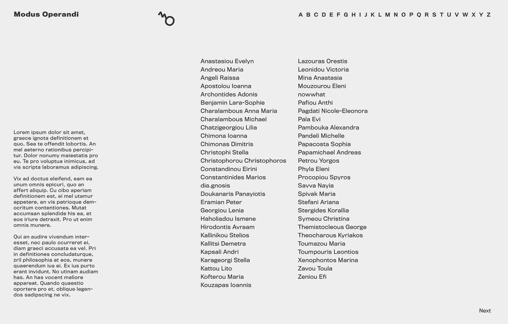
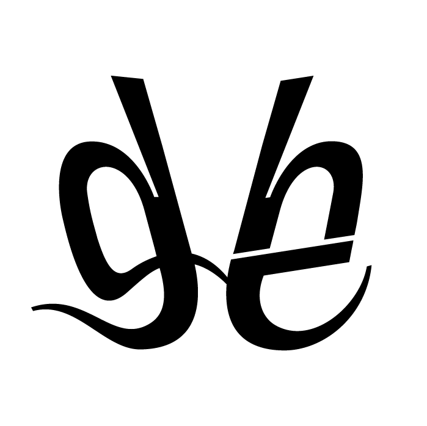
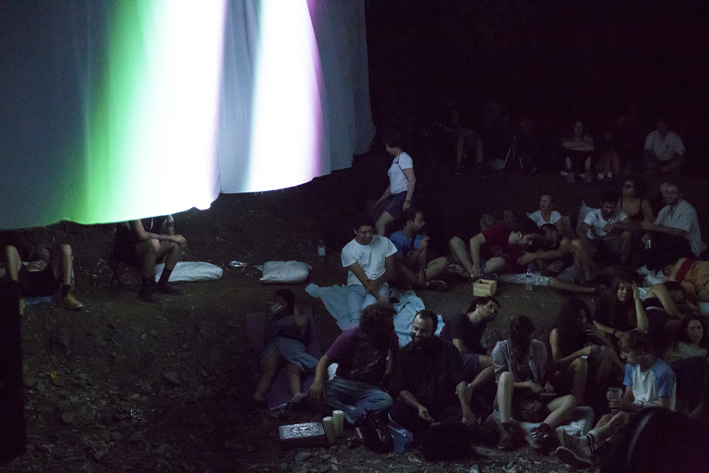
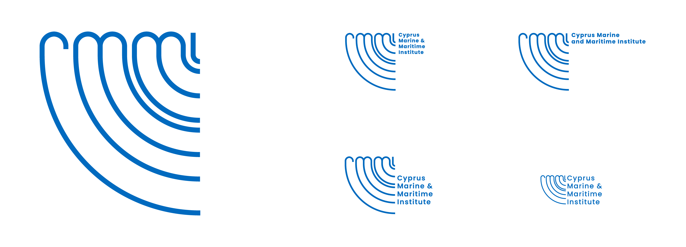

The River Speaks
App Design
UI & UX
Branding
Logo Design
This will be an educational and recreational mobile application on the cultural history of the Pediaios river. It will navigate users along the riverside park from its starting point in downtown Nicosia and will be suitable for use by the general public. It will encourage users to slow down and observe the river environment as well as provide more in-depth information on the history and ecology of the river and its interaction with people through time. The app will include a variety of sensory prompts and activities as well as rich archival visual material.
The mobile application A River Speaks is part of a two-year research project funded by the Sylvia Ioannou Foundation and has been designed by Despo Pasia and Evanthia Tselika

Images & Views of Alternative Cinema Festival
IVAC20
Catalogue Book Design
Visual Communication
Since its very first year, organisers and their associates have sought to showcase experimental cinema, through a truly diverse programme, giving audiences an opportunity to come into contact with the work of different film makers, artistic movements and cinema trends. Their common denominator is the exploration of the aesthetic and formalistic possibilities of audiovisual art, experimentation, social and existential concerns and the questioning of academic film writing. Often, the festival combines film language with other forms of audiovisual expression, such as video-art and animations.
The Festival entitled ‘Images and Views of Alternative Cinema’, is an initiative of the Ministry of Education and Culture and Theatro Ena, in cooperation with the Cultural Organisation Brave New Culture and Point Centre for Contemporary Art. Through its programmes, it aims to highlight experimental and alternative cinematographic expression.

Phytorio
Visual Artists Assosiation of Cyprus
Logo Design
The Visual Artists Αssociation (EI.KA) was founded in 2006 in Nicosia by a small group of artists. Today, it represents a large number of professional artists and art theorists, who work for the promotion and progress of art and culture. The aim of the association is to support the rights of artists and to create a legal framework for the status of the artist, including medical care, social security and pension allowance.
Funded by Ministry of Education and Culture
Modus Operandi 17
Visual Artists Assosiation of Cyprus
Logo Design
Publication Design
Website Design
Modus Operandi 2017 (MO.17), deals with emerging artists under the age of 35, and during their early professional stage. It aims to present a matrix of practices, as well as their connections to local culture and the world, as they currently stand.
Funded by Ministry of Education and Culture
I'm providing with a demo preview of the website as the website is nfortunately the website is down for maintenance.

Sickle & Code
Branding
Visual Communication
Digital Illustration
Visual Research
Sickle & Code is an international exhibition, part of Phygital, a programme conceptualised for Cyprus by Dr. Chrystalleni Loizidou within the scope of investigating contemporary movements towards a knowledge-sharing economy that reconsiders capitalist definitions of credit, labour and production. More specifically, in Sickle & Code, Cypriot and international artists present works that reflect, confront and re-evaluate current models of producing under the conjunction of global digital commons of knowledge.
The exhibition was accompanied by several parallel events that include makeathons, workshops, tours for schools and art schools, presentations, talks, performances and screenings."
Sickle & Code is organised by the University of Nicosia Research Foundation as part of project Phygital (an Interreg V 2014-2020 BalkanMed, EU-funded programme) and co-organized in collaboration with the University of Nicosia Fine Arts Programme (Department of Design and Multimedia) and the Municipality of Lakatamia. Ιmplementation partner: Thkio Ppalies. Curated by Peter Eramian, Elena Parpa, Evanthia (Evi) Tselika.
raster:index
Visual Communication for Event
Raster-Noton was a German electronic music record label established in 1999. Based in Chemnitz, Germany, it emerged from the fusion of Rastermusik, founded by Olaf Bender and Frank Bretschneider in 1996, and Noton (Archiv für Ton und Nichtton), a sublabel which was run by Carsten Nicolai.

Honest Electronics
Website Design
Management
Budgeting
Branding
Packaging
Artwork design
Visual Communication
Honest Electronics is a Cypriot independent record label and a collective that aims to activate locals to perform in a do-it-together social platform.
The record label works as a stand-alone company, highlighting and promoting the works of individuals who are active in the community. Our work with Honest is to provide artists with guidance and services like industry and technical know-how, and art direction.
With this network, we have been able to accomplish big projects such as our yearly festival ‘The Gathering’. Last year’s festival was a very important milestone. It was an only-local artists version, compiled by 40 artists that are part of our community and collective. The triumphant success of the festival had established confidence and pride that was very well needed within the community.
It is currently being run by (me) Designer & Multidisciplinary Artist Nikos Stephou and Sound Engineer & Event Organiser Aristos Ioannou.
The Gathering Festival
Honest Electronics
Management
Personal Relations
Artists & Repertoire
Human Resources
Budgeting
Branding
Artwork Design
Visual Communication
During the first phase of Honest, we would carry the following motto: ‘An action to highlight the importance of local networking while simultaneously attempting to connect with an international network.’ Therefore two things were important for us; organizing our local scene and meeting other similar minded international scenes. The first gathering had an equal amount of local and international participant acts and the name “The Gathering” was inspired by this idea. The act of bringing artists together that would have otherwise only met online.
Later our priority shifted to the first part of the equation as the Cypriot scene blossomed and we became very interested in managing and promoting it. No doubt, we’re still very interested in international networking and we still are taking steps to encourage such connections, but it’s not the motto of the festival anymore.

Cyprus Marine & Maritime Institute
Logo Design/Competition Submission
CMMI / MaRITeC-X is an EU project funded by the European Commission under the HORIZON 2020 Programme. The main objective of the project is the creation of an independent, international, scientific and business centre of excellence in marine and maritime activities: the Cyprus Marine and Maritime Institute (CMMI), driven by the needs of industry and society.

Orbital
Multidisciplinary Performance
At Thkio Ppalies Artists-Led Space
“Orbital” is a multidisciplinary project in which Nico has created sounds out of shapes. By creating a family of symbols, he proposes a language. These symbols are translated into records, one record for each. The combination of these symbols lead to sound-sentences. By playing four of them at the same time on a quadraphonic sound system, a sonic image of this graphical conversation is created.
The performance at Thkio Ppalies lasted for three hours. The crowd was able to walk in and out of the space at any time as the atmosphere was intended for meditation.
Funded by Ministry of Education and Culture